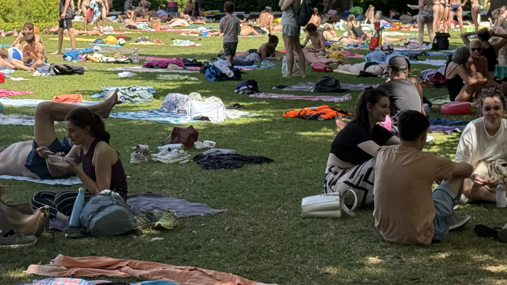
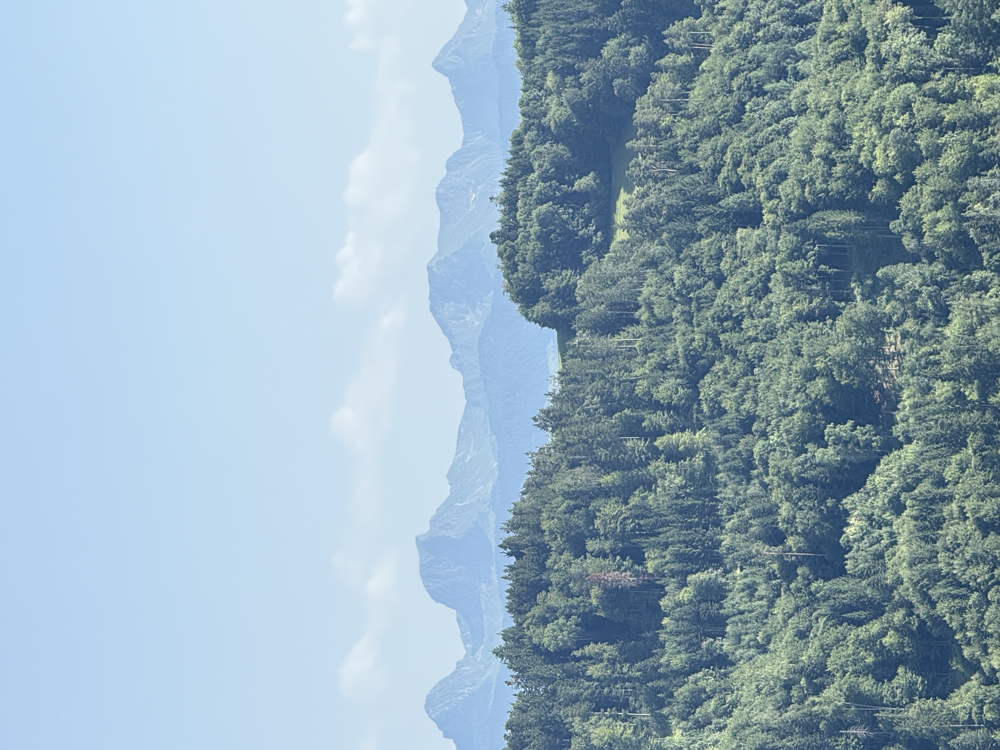

research-based digital project
biography of the river aare
I developed a research-based digital project that investigates materiality, landscape, and environmental memory through the case of the River Aare.
The project combines environmental humanities, cultural geography, and digital storytelling, and treats the river as an active archive rather than a passive backdrop.
External project link: v-aare.tumblr.com/drifters
gallery
project image sources

